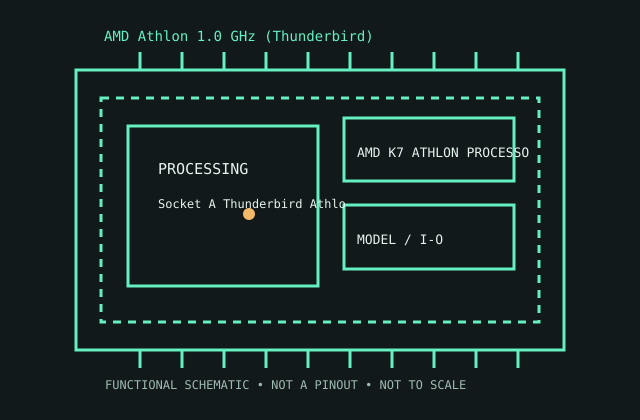

[ AMD K7 ATHLON PROCESSORS // IDENTIFIED CPU ]
AMD Athlon 1.0 GHz (Thunderbird)
Socket A Thunderbird Athlon 1 GHz, 2000. 1.0 GHz; 100 MHz DDR FSB (200 MT/s); 128 KB L1; 256 KB full-speed L2; 0.18 μm.

MODEL IDENTIFICATION: AMD Athlon 1.0 GHz (Thunderbird). Match full model suffix, stepping and package to the physical item and cited documentation.
Recorded specifications
| Cataloged model | AMD Athlon 1.0 GHz (Thunderbird) |
|---|---|
| Era / family | Socket A Thunderbird Athlon 1 GHz, 2000. |
| Model specifications | 1.0 GHz; 100 MHz DDR FSB (200 MT/s); 128 KB L1; 256 KB full-speed L2; 0.18 μm. |
| Compatibility | Socket A board supports Thunderbird BIOS, voltage and bus; exact OPN required. |
| Variants / limits | Slot A package differs from Socket A; OPN determines bus/voltage. |
Compatibility and variants
- Socket A board supports Thunderbird BIOS, voltage and bus; exact OPN required.
- Slot A package differs from Socket A; OPN determines bus/voltage.
- Check system-vendor CPU support, board revision, firmware minimum, package, memory, cooling and power before installation; similar socket naming does not prove compatibility.
Service and archival notes
Record OPN, board settings and cooler; exposed die can chip.
Archive the complete marking/OPN/sSpec, stepping, physical condition, tested host revision, firmware, memory population, cooling, and test conditions. Distinguish published limits from measurements.
Sources & further reading
- Model identification/specification search — AMD Athlon 1.0 GHz (Thunderbird)Model-level part identification and specification cross-reference.
- AMD technical archive — AMD Athlon 1.0 GHz (Thunderbird) product familyAMD-authored processor data books and family specifications.
- AMD product-history reference — AMD Athlon 1.0 GHz (Thunderbird)Manufacturer history reference for product-family context.
Use the matching manufacturer data sheet revision and platform vendor’s CPU list for final fit decisions.